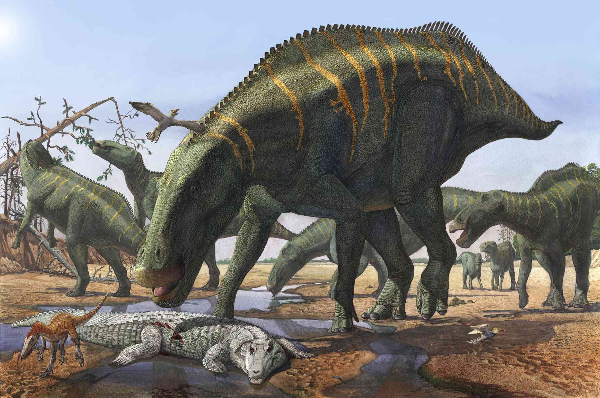
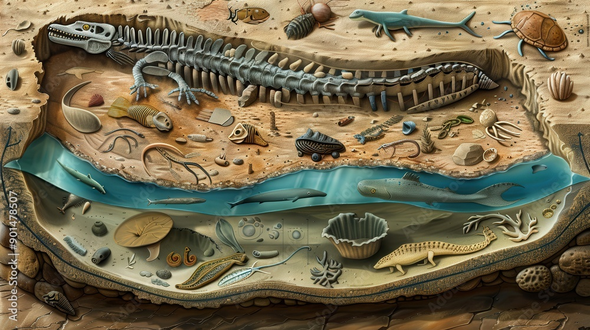
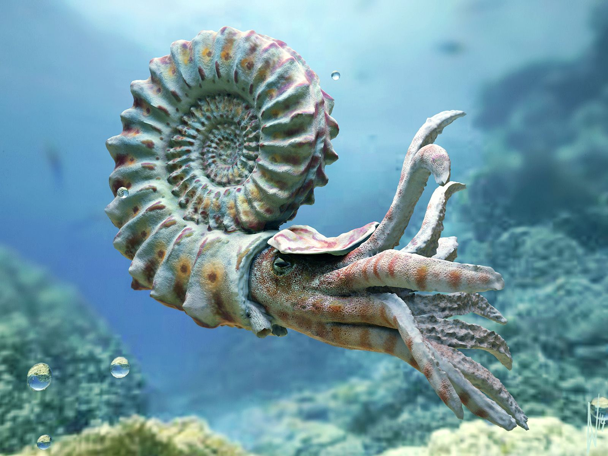
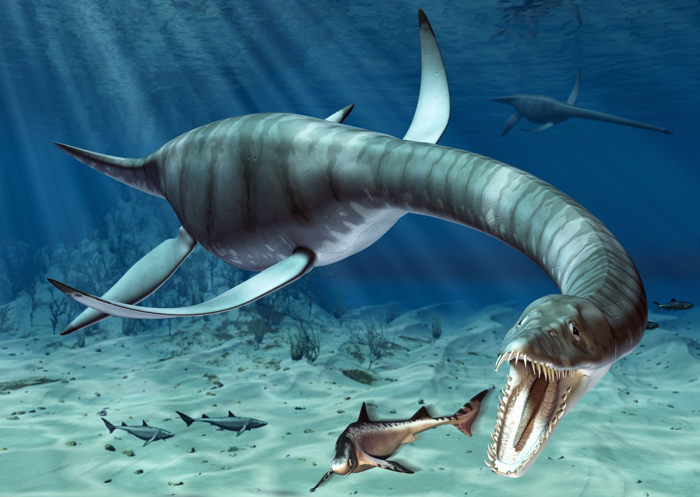
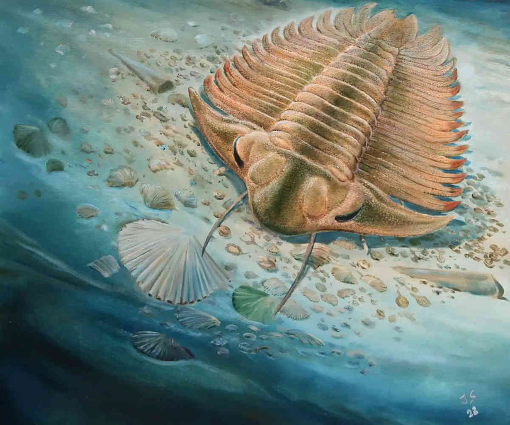
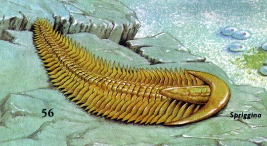
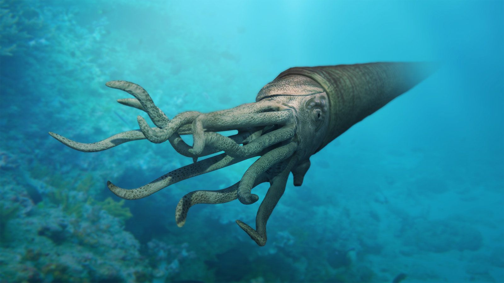
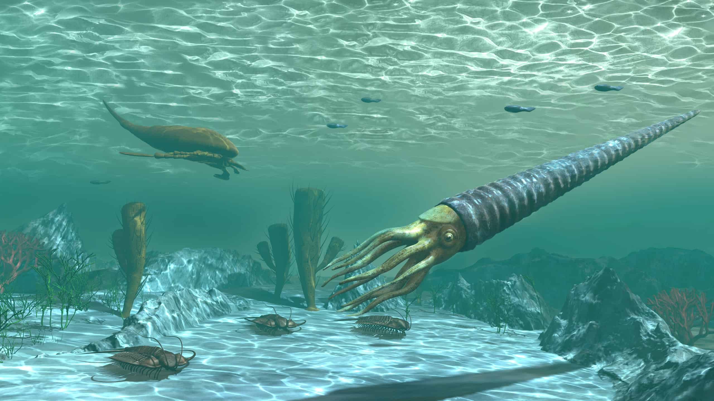
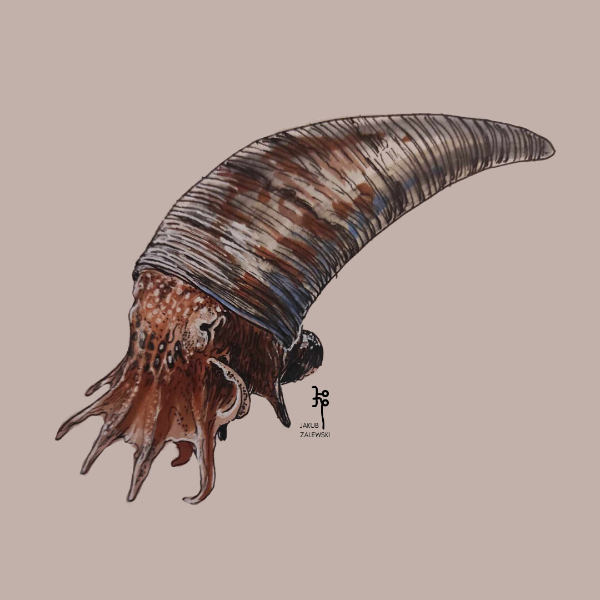
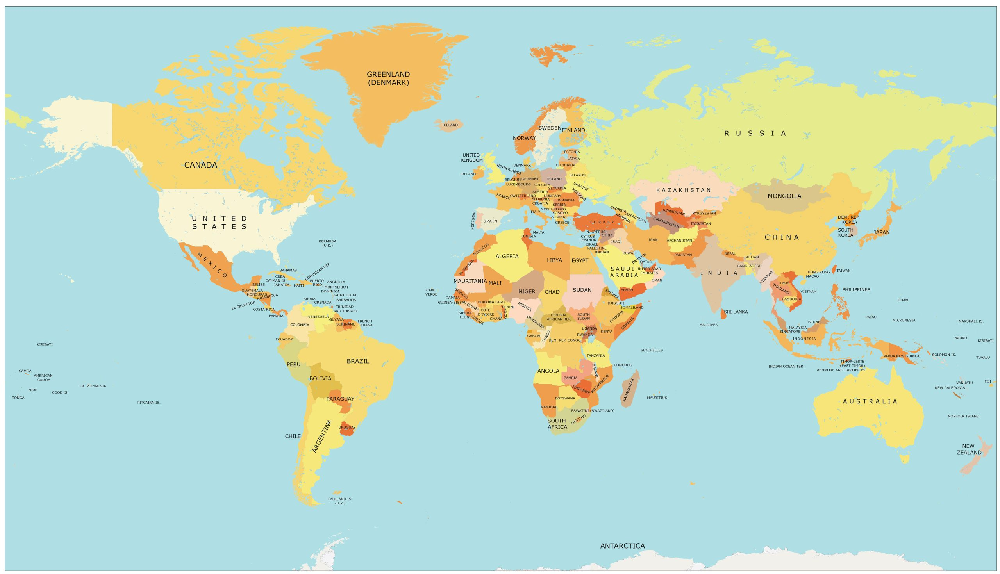

ARCHIVES OF PALEONTOLOGY
"Membaca Masa Lalu Melalui Jejak yang Tersisa"
Apa itu Paleontologi?
Paleontologi adalah ilmu yang mempelajari kehidupan praaksara di Bumi beserta interaksinya melalui pemeriksaan **fosil**. Berbeda dengan Arkeologi yang fokus pada sejarah manusia, Paleontologi melacak evolusi organisme dari miliaran tahun yang lalu.
"Fosil bukan sekadar batu, mereka adalah data waktu yang membeku."

Gbr 1.1: Ahli Paleontologi melakukan ekskavasi fosil di situs gurun.
Garis Waktu Kehidupan
[Image of geological time scale diagram]Era Paleozoikum
Munculnya kehidupan laut kompleks dan tumbuhan darat pertama.
Era Mesozoikum
Zaman kejayaan Dinosaurus (Trias, Jura, Kapur).
Era Kenozoikum
Kebangkitan mamalia dan munculnya spesies manusia.
Bagaimana Fosil Terbentuk?
- Kematian: Organisme mati dan terkubur cepat oleh sedimen (lumpur/pasir).
- Perpetuasi: Bagian lunak membusuk, menyisakan bagian keras (tulang/gigi).
- Per mineralisasi: Mineral dari air tanah meresap ke dalam pori-tulang.
- Ekskavasi: Erosi atau aktivitas manusia membawa fosil ke permukaan.

Tahukah Anda?
Burung yang kita lihat sekarang secara biologis adalah keturunan langsung dari dinosaurus Theropoda kecil. Jadi, secara teknis, "dinosaurus" tidak sepenuhnya punah!
Glosarium
Ekskavasi
Proses penggalian fosil dari lapisan tanah atau batuan sedimen.
Mesozoikum
Era geologi antara 252 hingga 66 juta tahun lalu, dikenal sebagai 'Zaman Reptil'.
Koprolit
Fosil kotoran dinosaurus yang membantu ilmuwan memahami pola makan mereka.
Peninggalan Samudera Purba

Ammonite
Moluska spiral. Kerabat hidup: Nautilus.

Plesiosaurus
Leher panjang. Legenda: Loch Ness.

Anomalocaris
Predator aneh dengan lengan penjepit raksasa.

Trilobite
Artropoda lapis baja, merajai dasar laut purba.
ARCHAEOPTERYX: SANG PENDAHULU
Mosaik Kehidupan
Hidup sekitar 150 Juta Tahun Lalu (Periode Jura), Archaeopteryx adalah fosil transisi paling terkenal. Ia ditemukan pertama kali di tambang batu kapur Solnhofen, Jerman, yang mampu mengawetkan detail bulu dengan sangat sempurna.
- Memiliki gigi tajam.
- Ekor bertulang panjang.
- Cakar di ujung sayap.
- Bulu sayap asimetris.
- Struktur sayap terbang.
- Postur tubuh ramping.
BIOTA EDIAKARA: JEJAK PERTAMA
Menjelajahi makhluk multiseluler pertama di Bumi.

Dickinsonia
Sering dianggap sebagai salah satu hewan pertama yang pernah hidup. Berbentuk pipih seperti handuk atau daun dengan ruas-ruas simetris.
- Ukuran: Beberapa mm hingga 1,4 meter.
- Gaya Hidup: Menghisap nutrisi dari mikroba di dasar laut.
- Fakta: Mengandung kolesterol (bukti kuat bahwa ia adalah hewan).

Spriggina
Kemungkinan besar adalah nenek moyang arthropoda (seperti Trilobite). Memiliki bagian "kepala" yang melengkung dan tubuh beruas.
- Ukuran: Sekitar 3 - 5 cm.
- Gaya Hidup: Kemungkinan bergerak aktif di dasar laut (predator awal?).
- Fakta: Menunjukkan awal mula simetri bilateral (kiri-kanan).
Ammonite: Insinyur Samudra
Ammonite adalah sefalopoda yang hidup selama 330 juta tahun. Mereka adalah kerabat purba dari cumi-cumi dan Nautilus. Cangkangnya yang ikonik berfungsi sebagai perlindungan sekaligus alat navigasi di kedalaman air.
- Masa Hidup: 400 JTL - 66 JTL
- Habitat: Laut Dangkal hingga Dalam
- Makanan: Plankton, Krustasea, dan Ikan Kecil
KERABAT DEKAT (PALEONTOLOGY LIST)

Cameroceras
Raksasa leher lurus yang bisa mencapai panjang 6-9 meter. Predator puncak era Ordovisium.

Orthoceras
Memiliki cangkang lurus runcing. Sangat umum ditemukan sebagai fosil di Maroko.

Plectronoceras
Salah satu sefalopoda tertua yang diketahui (Kambrium). Berukuran sangat kecil dan primitif.
PETA PENEMUAN BRACHIOSAURUS
Geser slider untuk melihat urutan penemuan fosil secara historis.

Tahun: 1890
Belum ada penemuan besar tercatat...
66 JTL: TITIK BALIK BUMI
Asteroid Chicxulub
Sekitar 66 Juta Tahun Lalu (JTL), sebuah asteroid berdiameter 10-15 km menghantam Bumi dengan kekuatan miliaran bom atom. Tabrakan ini menciptakan kawah raksasa selebar 150 km di Meksiko.
- Mega-Tsunami: Gelombang setinggi ratusan meter menyapu pesisir dunia.
- Musim Dingin Nuklir: Debu menutupi matahari selama bertahun-tahun.
- Kepunahan 75%: Mengakhiri era Dinosaurus dan membuka jalan bagi mamalia.
UJI PENGETAHUAN EMERALD
Berapakah tinggi kerangka Brachiosaurus yang dipajang di Museum Berlin?
TRIAL: SEA EXPLORER
Ammonite adalah kerabat purba dari makhluk laut modern yang mana?
HALL OF ACHIEVEMENTS
HIGH-REACHER
SEA EXPLORER
THE SURVIVOR
PALEONTOLOGY_SYSTEM_LOG.exe
[08:00:21] > Booting Emerald Library v3.0...
[09:12:45] > [FEATURE_ADDED] : Section 'Terx' (Dinosaurs) deployed successfully.
[10:05:12] > [UI_UPGRADE] : Glassmorphism Cards for Marine Life integrated.
[11:30:00] > [MAP_SYNC] : Brachiosaurus Discovery Map (Riggs Hill & Tendaguru) is active.
[12:45:10] > [LOGIC_INIT] : Search Bar with Auto-Jump & Suggestion logic enabled.
[13:20:55] > [EVENT_LOG] : Chicxulub Asteroid Impact 66 JTL simulation added.
[14:40:00] > [GAMIFICATION] : Trial of the Emerald Scholars (Quiz System) is live.
[15:15:30] > [BADGE_SYSTEM] : 'High-Reacher' & 'Sea Explorer' Achievement Unlocked.
[16:00:00] > [SCALE_SYNC] : Human vs Brachiosaurus 1:1 Comparison deployed.
[SYSTEM] > Status: Pustaka Emerald Paleontology OPTIMIZED.
_